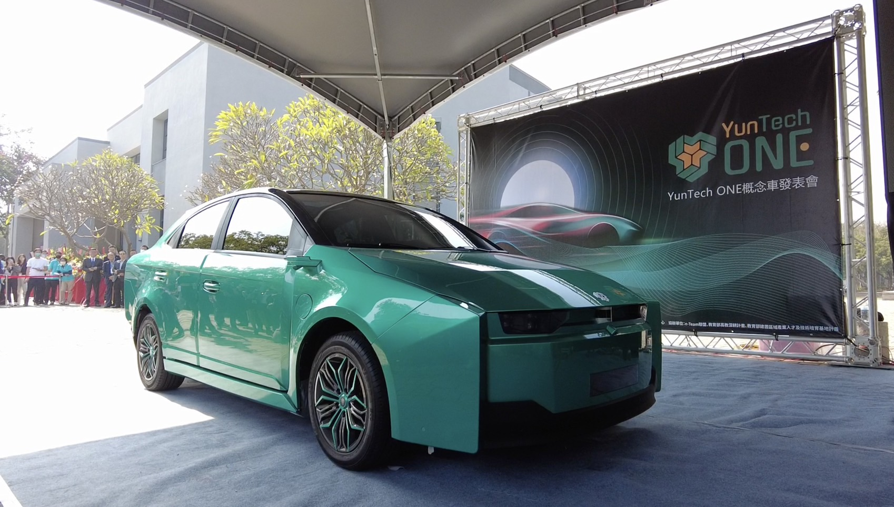

雲科一號：駛向未來電動車
YunTech ONE（雲科一號）：全台首輛產學共研智慧電動概念車， 不僅是技術結晶，更雲科大與產業深度結盟的里程碑， 共創綠色移動新未來。
了解更多INDUSTRY & INNOVATION
雲林不只有農業，更有著蓬勃發展的隱形冠軍與未來科技。
雲科大扮演著驅動引擎的角色，協助在地產業升級，讓年輕人願意留在家鄉打拚。
這些在實驗室裡誕生的技術，正在重新定義雲林的產業樣貌。
校園裡的產學研大樓 (Dream Hub)，是一個讓學生與企業並肩作戰的基地， 也是夢想與現實交會的起點。 在這裡，我們推倒了象牙塔的圍牆，讓教室不再只是單向的知識傳遞， 而是充滿無限創意與跨界合作的實驗場。在地企業帶著最真實的產業痛點走進來， 師生團隊則運用嶄新的思維與技術，將這些挑戰轉化為具體的解決方案帶出去。 每一次的腦力激盪，都是理論與實務的精彩碰撞； 每一次的攜手合作，不只為在地產業注入升級的活水，更讓學生成為能獨當一面的將才。 我們不僅是在解決問題，更是在共創一個產學共好、區域共榮的未來。